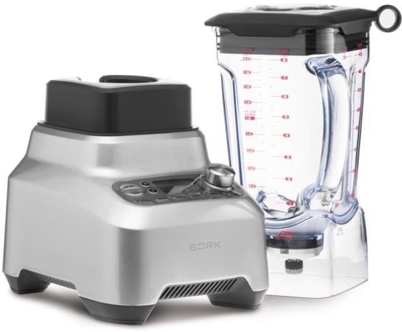
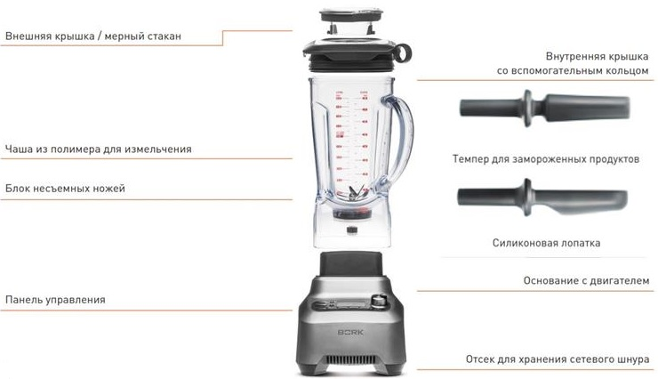
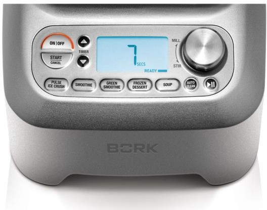
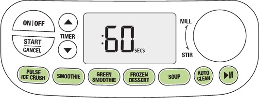

Суперблендер BORK B802
Характеристики и свойства

Pro Kinetix™
Высока мощность 2200 Ватт Максимальные обороты: 32000 об/мин Легкая чаша объемом 2.0 литра EastmanTritan ™ (BPA free)
Крышка с выходом пара
5 автоматических программ ( Pulse/ Ice crush, Smoothie, Green smoothie, Frozen dessert, Soup)
12 скоростей в ручном режиме
Таймер с прямым и обратным отсчётом Пауза
Темпер и лопатка
Программа самоочистки Литой корпус
LCD дисплей
Устройство
Система смешивания ProKinetix
Система смешивания ProKinetix состоит из долговечных стальных ножей разной формы. Широкие боковые ножи измельчают продукты на дне чаши, одновременно поднимая их вверх, а центральные ножи создают поток вниз, тем самым завершая круг циркуляции.
Таким образом, суперблендер эффективно измельчает ингредиенты и равномерно смешивает их по всей чаше.
Прочная чаша для измельчения сухих и влажных продуктов
Объемная чаша суперблендера изготовлена из прочного полимера eastman tritan™, который не содержит вредных веществ. Ударостойкая, долговечная, легко переносит мойку в посудомоечной машине. Уникальная форма чаши улучшает внутреннюю
циркуляцию продуктов, способствует заполнению всех пустот. Подходит для измельчения как влажных, так и сухих продуктов.
Панель управления
Супер-возможности
Мощный и высокотехнологичный суперблендер предназначен для измельчения самых разных ингредиентов, включая приготовление
муки из зерна. Широкий диапазон кулинарных возможностей: зеленые и фруктовые смузи, супы, замороженные йогурты, сорбеты, мороженое, соевое и ореховое молоко, соусы и заправки, топпинги и намазки, лед.
Регулятор скорости
Широкий диапазон точного регулирования скорости от медленного перемешивания до высокоскоростного помола.
12 скоростей позволяют измельчать и смешивать продукты различной консистенции. Диапазон скоростей от 12 до 1.
- MILL 12 скорость Режим помола
- PUREE 10–11 скорость Режим пюре
- BLEND 8–9 скорость Взбивание
- CHOP 6–7 скорость Измельчение
- MIX 4–5 скорость Смешивание
- STIR 1–3 скорость Перемешивание
Функция AUTO CLEAN
Данная функция позволяет упростить процесс очистки чаши вместе с ножами.
- Добавьте 500 мл теплой воды с небольшим количеством жидкого моющего средства в чашу, плотно закройте крышку и нажмите кнопку AUTO CLEAN.
- Время работы функции: 1 минута. Затем промойте чашу в проточной воде и протрите мягкой сухой салфеткой.
- Все съемные части прибора сразу после использования необходимо промывать проточной водой с использованием мягких моющих средств.
Автоматические программы
12 скоростей, 5 программ
5 автоматических программ специально разработаны для приготовления самых
распространенных блюд нажатием одной кнопки: фруктовый смузи, зеленый смузи, холодный десерт, суп-пюре и измельчение льда.
Режим PULSE | ICE CRUSH
Режим интенсивной обработки PULSE | ICE CRUSH подходит для твердых продуктов, например орехов, льда. В этом режиме суперблендер работает на максимальной скорости в течение 60 секунд.
Режим SMOOTHIE
В режиме приготовления смесей SMOOTHIE автоматически происходит смешивание ингредиентов попеременно на низкой и высокой скоростях в течение 60 секунд.
Данный режим идеально подходит для смешивания замороженных и жидких ингредиентов.
Режим GREEN SMOOTHIE
Данный режим подходит для измельчения целых твердых ингредиентов, таких как фрукты, зелень и семена, и смешивания их в консистенцию с другими мягкими и жидкими ингредиентами.
Режим FROZEN DESSERT
Идеально подойдет для быстрого измельчения и смешивания замороженных ингредиентов.
Режим SOUP
При обработке продуктов на максимальной мощности в течение длительного времени смесь внутри суперблендера может нагреваться до 60 градусов. Горячий суп-пюре — нажатием одной кнопки.
Работа с жидкими и твердыми ингредиентами один кувшин для всех ингредиентов
Из-за особенности вращения ножей, некоторые коммерческие блендеры требуют разные системы ножей и кувшинов для сухих и жидких ингредиентов.
Система ножей ProKinetix и форма чаши разработаны для измельчения и перемешивания всех ингредиентов, не важно жидкие они или сухие.
Интуитивное управление
В некоторых коммерческих блендерах требуется настраивать скорость вращения ножей и время, подстраиваясь под задачу.
В суперблендере BORK самые важные и часто используемые функции запрограммированы для удобства и простоты использования.
